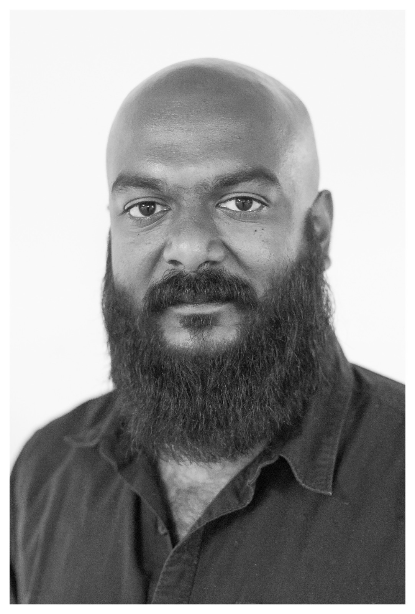

pradeep harikrishnan
Test Manager
Senior Test Analyst

Katzwanger Straße 133
90461 Nürnberg
er.h.pradeep@gmail.com
+49 176 24526943
Ich bin ISTQB-zertifizierter Tester mit 10 Jahren Erfahrung im Bereich Testen, d. h. manuelles Testen, API-Testautomatisierung und Testmanagement.
Middleware
Community of Practice
Accessplattform
Coaching von Azubis
Global Cetification Forum
Middleware
Atos Information Technology GmbH - BAMF
Test Manager
Nürnberg, Deutschland
Jan 2022 - Sep 2023
Öffentliche Dienst
Entwicklung von PaaS Middleware Komponenten nach BAMF Software Architektur Standards für die Bereitstellung von Projekt bezogenen Services.
Einige der Dienste waren Dokumentendienste, Datagrid-Dienste, Event-Driven Aktivitäten, usw.
Die Dokumentendienste stellen den Kundenprojekten umfassende Funktionalitäten zur Dokumentenverwaltung in mehreren Formaten zur Verfügung.
Die Datagrid-Dienste stellen den Kundenprojekten maßgeschneiderte Schnittstellen für den Zugriff auf Informationen vom verschiedenen Datebanken bereit.
Die NAM stellt mandantabhängige Schnittstellen für die Übergabe von Dokumenten an das interne Fachverfahren unter Verwendung der Dokumentdienste Bereit.
Dabei kommen umfangreiche eventbasierte Streamanwendungen für asynchron Verarbeitung von Nachrichten zum Einsatz.
- Analyse von technischen Anforderungen, Abschätzung von Testaufwänden und Erstellen von Timelines
- Planung, Kommunikation und Koordination von Aufgaben mit den Stakeholdern (Kundenprojekte, PM, Entwickler, OPS-Team)
- Erstellung von Testkonzepten, Testabschlussberichten und Präsentation von Testergebnissen bei den Stakeholdern
- Leitung vom QA Team bestehend aus fünf Mitarbeitern
- Konsolidierung von Testergebnissen im gesamten QA-Team
- Einrichten von Testprozessen für funktionale und nicht funktionale Tests
- Planung, Koordination und Kommunikation von API-Tests & nicht-funktionalen Tests mit den Stakeholdern
- Eskalation von auftretenden Problemen in Testprojekten und mit Kundenprojekten
- Bug Management
Community of Practice
Atos Information Technology GmbH - BAMF
Koordinator
Nürnberg, Deutschland
Jan 2021 - Sep 2023
Öffentliche Dienst
Das Hauptziel der Community ist es, den Wissenstransfer zwischen Testern aus verschiedenen Projekten zu ermöglichen. Die Community umfasst rund 70 Tester.
- Koordination von der gesamten Community
- Planung, Organisation und Moderation von TestTalks und Crowdtest
- Moderation von Workshops für TMs
- Bildung von Komitees, um Lösungen für bestehende Probleme zu finden
Middleware
Atos Information Technology GmbH - BAMF
Senior Test Analyst
Nürnberg, Deutschland
Jul 2019 - Dez 2021
Öffentliche Dienst
Entwicklung von PaaS Middleware Komponenten nach BAMF Software Architektur Standards für die Bereitstellung von Projekt bezogenen Services.
Einige der Dienste waren Dokumentendienste, Datagrid-Dienste, Event-Driven Aktivitäten, usw.
Die Dokumentendienste stellen den Kundenprojekten umfassende Funktionalitäten zur Dokumentenverwaltung in mehreren Formaten zur Verfügung.
Die Datagrid-Dienste stellen den Kundenprojekten maßgeschneiderte Schnittstellen für den Zugriff auf Informationen vom verschiedenen Datebanken bereit.
Die NAM stellt mandantabhängige Schnittstellen für die Übergabe von Dokumenten an das interne Fachverfahren unter Verwendung der Dokumentdienste Bereit.
Dabei kommen umfangreiche eventbasierte Streamanwendungen für asynchron Verarbeitung von Nachrichten zum Einsatz.
- Review von Fachkonzepten
- Entwicklung von Testszenarien und Abschätzung von Testaufwänden
- Analyse von Anforderungsdokumenten zur Erstellung und Durchführung von manuellen sowie automatisierten Testfällen mit ISTQB-Techniken
- Bug Management
- Ansprechparter von QA-Team für Kundenprojekte
Scopia Video-Conferencing
1&1 Versatel Deutschland GmbH
Tester & Koordinator
Flensburg, Deutschland
Jun 2018 – Mär 2019
Telekommunikation
Überprüfung von Kompatibilität von Commercial-off-the-shelf (COTS)-Produkt und Erstellung von Benutzerhandbuch für Scopia
- Testen von Hauptfunktionalitäten
- Aufbau eines temporären Testteams aus IT-Service Abteilung, Fachabteilung und Geschäftsleitung
- Planung, Koordination und Kommunikation von Testaktivitäten mit dem zusammengestellten Testteam
- Coaching von nicht-Testern in Rahmen von den notwendigen Testaktivitäten bei dem Testen des DUTs
- Erstellung von einer Bedienungsanleitung im Video-Format erstmals in Unternehmen
Coaching von Azubis
1&1 Versatel Deutschland GmbH
Coach
Flensburg, Deutschland
Jun 2018 – Jun 2019
Telekommunikation
Coaching von Azubis zu den Grundlagen von Testen und Testmanagement
- Vorbereitung von Seminar
- Vorbereitung von Handouts
- Vorbereitung von maßgeschneiderter interaktiven Session
- Tagesschulung für Azubis
ZUGFeRD
1&1 Versatel Deutschland GmbH
Agiler Tester
Flensburg, Deutschland
Jun 2017 – Dez 2018
Telekommunikation
ZUGFeRD steht für Zentraler User Guide des Forums elektronische Rechnung Deutschland ist eine Spezifikation für das gleichnamige Format elektronischer Rechnungen.
Das Format wurde vom Forum elektronische Rechnung Deutschland (FeRD) in Zusammenarbeit mit Verbänden, Ministerien und Unternehmen entwickelt.
ZUGFeRD-konforme Rechnungen sollen zwischen Unternehmen sowie zwischen Unternehmen und der öffentlichen Verwaltung schnell, komfortabel und einfach elektronisch ausgetauscht werden.
- Review von Fachkonzepten und Erstellung von Testszenarien
- Erstellung und Ausführung von manuellen Testfällen
- Erstellung von einer Rückverfolgbarkeitsmatrix für den Entwickler und Testabschlussbericht für das Management
- Erstellung und Verwaltung von Fehlern
Whitelabel & SPG
1&1 Versatel Deutschland GmbH
Agiler Test Manager
Flensburg, Deutschland
Jun 2017 - Jun 2019
Telekommunikation
Entwicklung von einem internen webbasierten Abrechnungssystem. Enwicklung von Service Provisioning Gateway (SPG - Middleware Komponent) für den Zugriff auf den Abrechnungssystem für Drittanbieter.
- Durchführung von gesamten Testmanagement im Rahmen der vorgegebenen Prozesse und Systemlandschaft sowie das Definieren von Testszenarien
- Dokumentation von Testanforderungen, Testfällen, Systemen und Release-Ständen mit dem Ziel der Erfolgskontrolle und Ableitung von entsprechenden Maßnahmen
- Mitwirkung bei der Auswahl und Einführung einer Testautomatisierungsumgebung
- Mitwirkung in Scrum-Team für die Ermöglichung von automatisierten Regressionstests und systemübergreifenden wiederholbaren E2E Tests
- Einleitung der Fehlerbehebung (Bug Fixing) bei fehlerhaften Testergebnissen und Verfolgung (Tracking) der termingerechten Behebung bzw. Eskalation
- Qualitätssicherung von lnbetriebnahme anstehenden Software
- Mitverantwortung für den Betrieb der Software
- Erstellung von Betriebsanleitungen für die entsprechenden Anwender unter Berücksichtigung der jeweiligen Bedarfe und anschließende Durchführung von Schulungsmaßnahmen nach Anforderung des Fachbereichs
- Beratungen von Fachbereichen sowie das Erbringen von Unterstützungsleistungen für realisierende Fachbereiche
Accessplattform
1&1 Versatel Deutschland GmbH
Agiler Tester
Flensburg, Deutschland
Mär 2016 - Sept 2017
Telekommunikation
Entwicklung von internen webbasierten Abrechnungssystem
- Erstellung von Testszenarien und Testfällen gemäß den Anforderungen
- Erstellung und Verwaltung von Fehlern
- Erstellung von einen detaillierten Testabschlussbericht, der auf die Notwendigkeit des Folgenden hinweist
- Versionierung mit einem Tool
- Ersetzen von Wasserfall-Softwareentwicklungsmodell durch SCRUM-Methode
Global Certification Forum (GCF)
Microsoft Deutschland GmbH
Werkstudent - Field Tester
Ratingen Ost, Deutschland
Okt 2012 – Okt 2015
Telekommunikation
Das Global Certification Forum (GCF) ist eine Zertifizierungsorganisation, in der sich Hersteller, Betreiber und Testlabore mit der Konformität von Geräten in Mobilfunknetzen mit Standards und Spezifikationen befassen.
Der Prozess basiert auf technischen Anforderungen, die in speziellen Testspezifikationen von 3GPP, OMA, IMTC, GSM Association usw. angegeben sind.
Er gilt sowohl für Modulhersteller als auch für Endprodukthersteller.
Durchführung von Fieldprojekten im Bereich Forschung und Entwicklung (R&D). Prüfung von dem netzwerkunabhängigen Teil des Global Certification Forum (GCF)
- Field Tests für mobile Geräte basierend auf Groupe Spécial Mobile Association (GSMA) TS.11
- Implementierung des Netzwerknamens basierend auf GSMA TS.25
- Mobilitätstestaktivitäten
- Flashen von Nokia Series 30, 40, Asha sowie Windows Phone 7, 8, 10 Mobilgeräten
- Tracing und Analyse von Protokollen von Nokia-/Microsoft-Mobilgeräten
- Kommunikation mit Produktmanagern, Field Test managern und Dienstleistern im Field Test bereich
- Koordination von Fehlerbehebungsmaßnahmen in Zusammenarbeit mit internationalen Standorten
- Technische Dokumentation auf Englisch für den internen Gebrauch
Variant Verification, Firmware Update over the air und In-Country Testing
Microsoft Deutschland GmbH
Werkstudent - Tester
Ratingen Ost, Deutschland
Okt 2012 - Okt 2015
Telekommunikation
Überprüfung von DUT nach einem Firmware-Update over the air und spezifischen Country Variant. Prüfung deutscher Varianten entsprechend den Bedürfnissen der lokalen Netzbetreiber
- Evidence Based Acceptance Testing für Telekommunikationsunternehmen
- Software variant Test für deutschen Netzbetreiber
- Fehlerbeschreibung und Reporting in mehreren Fehlerdatenbanken
- Flashen von Windows Phone 7, 8, 10 Mobilgeräten
- Kommunikation mit Produktmanagern
E-Services
Barmenia Versicherungen
Praktikant
Wuppertal, Deutschland
Jun 2012 - Sep 2012
Versicherung
Fokus auf dem Erstellen eines kleinen Verwaltungssystems für kundenbezogene Vorgänge. Entwicklung von einem Modul für ein Datenbankmanagementsystem mit mySQL und Java
- Analyse von fachlichen Aufgaben und deren Überführen in eine Programmieraufgabe unter dem Einsatz objektorientierter Methoden
- Objektorientierung und Schichtentrennung mit Java
- Erstellen einer Datenbank unter Berücksichtigung der konkreten fachlichen Aufgabe mit Hilfe des Datenbanksystems "MySQL"
- Datenzugriff mit Java
- Aufbau von Businesslogik für die konkrete Aufgabe und Umgang mit XML-Daten in Java
- Aufbau eines Hilfswerkzeuges, um vorhandene XML-Altdaten aus einer vorhandenen Anwendung zu übernehmen
Fashion Portal
Falconn Technologies
Support Service Engineer
Chennai, Indien
Jun 2008 – Jul 2009
IT und Dienstleistung
Entwicklung eines Online-Kataloges mit Übersicht aller Produkte im Geschäft bzw. Lagerbestand
- Durchführung von Abnahmetests
- Dokumentation von Testergebnissen
DevOps kombiniert mit Nexus SCRUM
Agile
SCRUM
Kanban
mySQL
Oracle
C++
Java
HTML
XML
Nokia s30
Nokia s40
Nokia Asha Platform
Microsoft Windows Phone
Second Generation (2G)
Third Generation (3G)
Long Term Evolution (LTE)
International und multicultural experience
Teamfähigkeit
flexibel und zielorientiert
Engagement